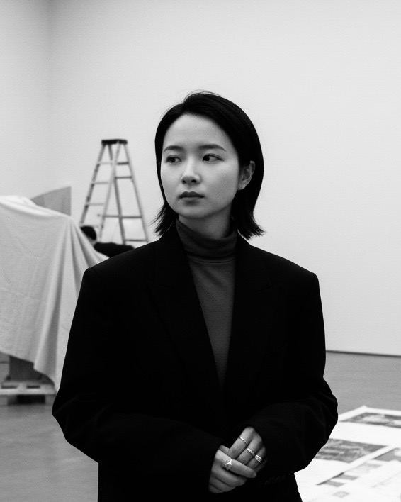

李雨谦
Art Director of EAST2046. Curator, artist and researcher working across art, technology and cultural identity.
View Work →
Raine Li — London, 2025
Raine Li (李雨谦) is a London-based curator, artist, writer and researcher whose work moves across the intersections of contemporary art, technological pluralism and cultural identity. At the heart of her practice is a sustained inquiry into cultural plurality: how diverse cultural experiences are constructed, represented and negotiated, and the conditions that render certain voices visible while others remain marginalised.
She is Art Director of EAST2046 and initiator of the Interweave Award, two platforms she has developed as spaces for interdisciplinary exchange and critical inquiry. Her work spans curatorial, artistic and critical practices, through which she examines how emerging technologies are situated within and shaped by broader cultural and institutional frameworks.
Her projects have been presented internationally in London, Tokyo, Beijing, New York and Milan, and at major platforms including Milan Design Week, NYCxDESIGN Festival, London Design Festival and Arts Fringe.
Rooted in the Yi (彝) ethnic minority culture of Yunnan, China, Li's research is shaped by a deep engagement with questions of cultural plurality and identity. Drawing on feminist and postcolonial critical frameworks, she analyses the power structures and modes of representation embedded in contemporary technological and cultural discourses.
Critical writing, essays and reviews — forthcoming.